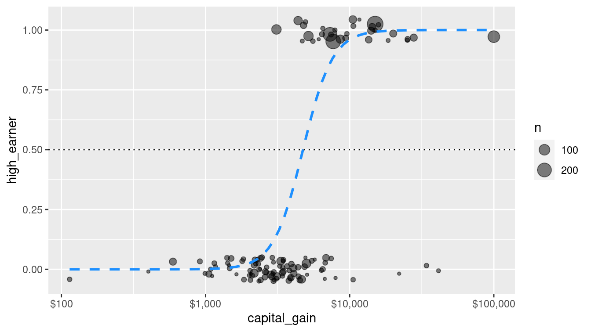
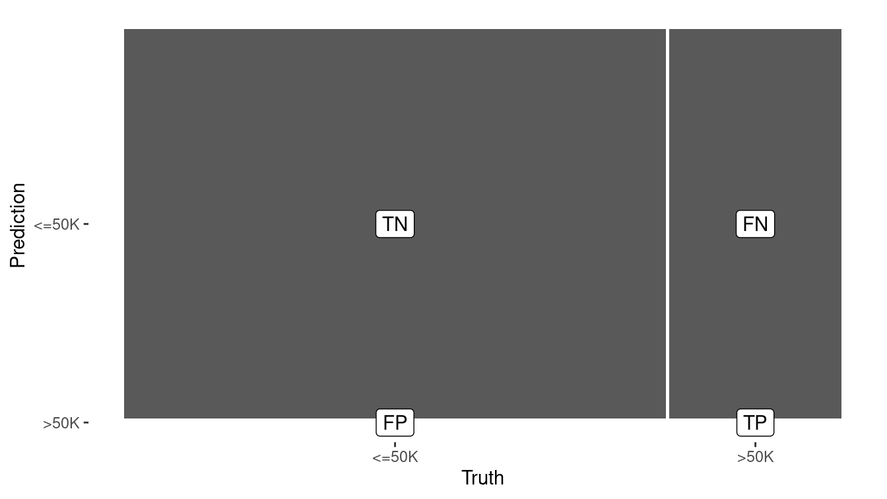
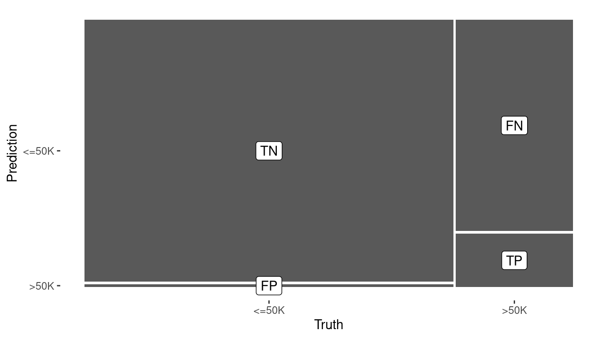
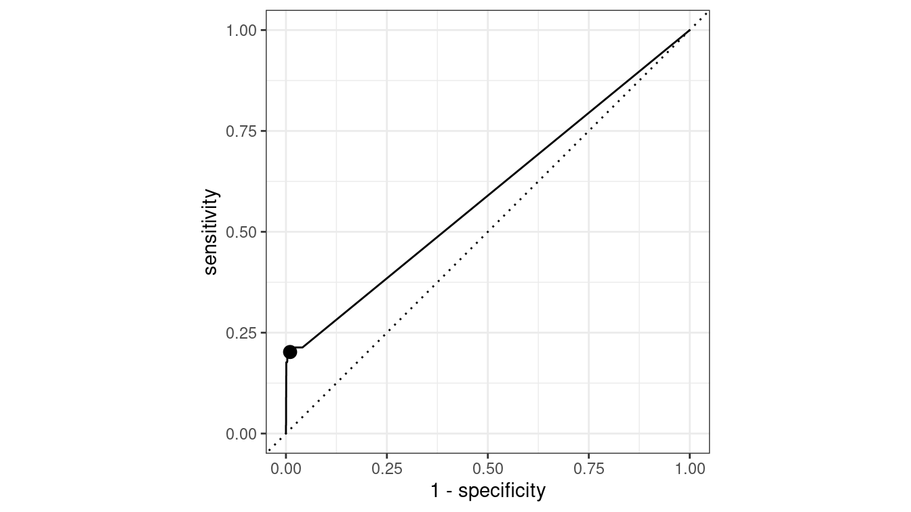
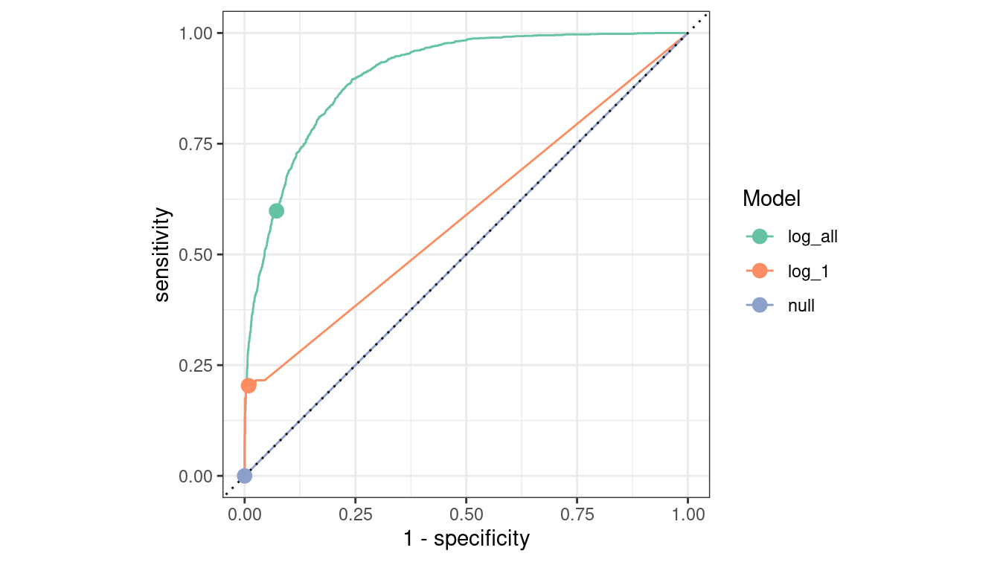
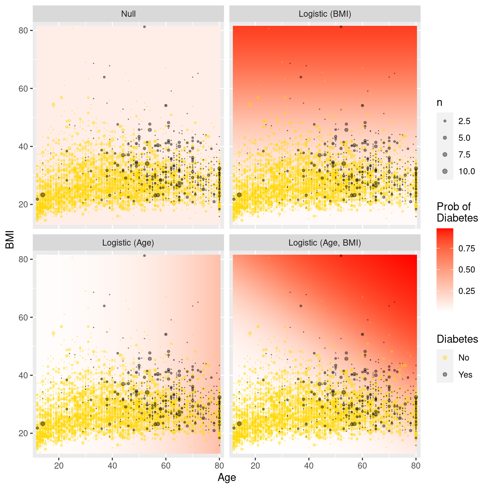

Chapter 10 Predictive modeling
Thus far, we have discussed two primary methods for investigating relationships among variables in our data: graphics and regression models. Graphics are often interpretable through intuitive inspection alone. They can be used to identify patterns and multivariate relationships in data—this is called exploratory data analysis. Regression models can help us quantify the magnitude and direction of relationships among variables. Thus, both are useful for helping us understand the world and then tell a coherent story about it.
However, graphics are not always the best way to explore or to present data. Graphics work well when there are two or three or even four variables involved. As we saw in Chapter 2, two variables can be represented with position on paper or on screen via a scatterplot. Ultimately, that information is processed by the eye’s retina. To represent a third variable, color or size can be used. In principle, more variables can be represented by other graphical aesthetics: shape, angle, color saturation, opacity, facets, etc., but doing so raises problems for human cognition—people simply struggle to integrate so many graphical modes into a coherent whole.
While regression scales well into higher dimensions, it is a limited modeling framework. Rather, it is just one type of model, and the space of all possible models is infinite. In the next three chapters we will explore this space by considering a variety of models that exist outside of a regression framework. The idea that a general specification for a model could be tuned to a specific data set automatically has led to the field of machine learning.
The term machine learning was coined in the late 1950s to describe a set of inter-related algorithmic techniques for extracting information from data without human intervention.
In the days before computers, the dominant modeling framework was regression, which is based heavily on the mathematical disciplines of linear algebra and calculus. Many of the important concepts in machine learning emerged from the development of regression, but models that are associated with machine learning tend to be valued more for their ability to make accurate predictions and scale to large data sets, as opposed to the mathematical simplicity, ease of interpretation of the parameters, and solid inferential setting that has made regression so widespread Bradley Efron (2020). Nevertheless, regression and related statistical techniques from Chapter 9 provide an important foundation for understanding machine learning. Appendix E provides a brief overview of regression modeling.
There are two main branches in machine learning: supervised learning (modeling a specific response variable as a function of some explanatory variables) and unsupervised learning (approaches to finding patterns or groupings in data where there is no clear response variable).
In unsupervised learning, the outcome is unmeasured, and thus the task is often framed as a search for otherwise unmeasured features of the cases. For instance, assembling DNA data into an evolutionary tree is a problem in unsupervised learning. No matter how much DNA data you have, you don’t have a direct measurement of where each organism fits on the “true” evolutionary tree. Instead, the problem is to create a representation that organizes the DNA data themselves.
By contrast, in supervised learning—which includes linear and logistic regression—the data being studied already include measurements of outcome variables. For instance, in the NHANES data, there is already a variable indicating whether or not a person has diabetes. These outcome variables are often referred to as labels. Building a model to explore or describe how other variables (often called features or predictors) are related to diabetes (weight? age? smoking?) is an exercise in supervised learning.
We discuss metrics for model evaluation in this chapter, several types of supervised learning models in the next, and postpone discussion of unsupervised learning to Chapter 12. It is important to understand that we cannot provide an in-depth treatment of each technique in this book. Rather, our goal is to provide a high-level overview of machine learning techniques that you are likely to come across. By working through these chapters, you will understand the general goals of machine learning, the evaluation techniques that are typically employed, and the basic models that are most commonly used. For a deeper understanding of these techniques, we strongly recommend G. James et al. (2013) or Hastie, Tibshirani, and Friedman (2009).
10.1 Predictive modeling
The basic goal of predictive modeling is to find a function that accurately describes how different measured explanatory variables can be combined to make a prediction about a response variable.
A function represents a relationship between inputs and an output (see Appendix C). Outdoor temperature is a function of season: Season is the input; temperature is the output. Length of the day—i.e., how many hours of daylight—is a function of latitude and day of the year: Latitude and day of the year (e.g., March 22) are the inputs; day length is the output. Modeling a person’s risk of developing diabetes could also be a function. We might suspect that age and obesity are likely informative, but how should they be combined?
A bit of R syntax will help with defining functions: the tilde. The tilde is used to define what the output variable (or outcome, on the left-hand side) is and what the input variables (or predictors, on the right-hand side) are. You’ll see expressions like this:
diabetic ~ age + sex + weight + heightHere, the variable diabetic is marked as the output, simply because it is on the left of the tilde (~). The variables age, sex, weight, and height are to be the inputs to the function. You may also see the form diabetic ~ . in certain places. The dot to the right of the tilde is a shortcut that means: “use all the available variables (except the output).” The object above has class formula in R.
There are several different goals that might motivate constructing a function.
Predict the output given an input. It is February, what will the temperature be? Or on June 15th in Northampton, MA, U.S.A. (latitude 42.3 deg N), how many hours of daylight will there be?
Determine which variables are useful inputs. It is obvious from experience that temperature is a function of season. But in less familiar situations, e.g., predicting diabetes, the relevant inputs are uncertain or unknown.
Generate hypotheses. For a scientist trying to figure out the causes of diabetes, it can be useful to construct a predictive model, then look to see what variables turn out to be related to the risk of developing this disorder. For instance, you might find that diet, age, and blood pressure are risk factors. Socioeconomic status is not a direct cause of diabetes, but it might be that there an association through factors related to the accessibility of health care. That “might be” is a hypothesis, and one that you probably would not have thought of before finding a function relating risk of diabetes to those inputs.
Understand how a system works. For instance, a reasonable function relating hours of daylight to day-of-the-year and latitude reveals that the northern and southern hemisphere have reversed patterns: Long days in the southern hemisphere will be short days in the northern hemisphere.
Depending on your motivation, the kind of model and the input variables may differ. In understanding how a system works, the variables you use should be related to the actual, causal mechanisms involved, e.g., the genetics of diabetes. For predicting an output, it hardly matters what the causal mechanisms are. Instead, all that’s required is that the inputs are known at a time before the prediction is to be made.
10.2 Simple classification models
Classifiers are an important complement to regression models in the fields of machine learning and predictive modeling. Whereas regression models have a quantitative response variable (and can thus often be visualized as a geometric surface), classification models have a categorical response (and are often visualized as a discrete surface, i.e., a tree).
To reduce cognitive overhead, we will restrict our attention in this chapter to classification models based on logistic regression. In the next chapter, we will introduce other types of classifiers.
A logistic regression model (see Appendix E) can take a set of explanatory variables (or features) and convert them into a predicted probability. In such a model, the analyst specifies the form of the relationship and what variables are included. If \(\mathbf{X}\) is the matrix of our \(p\) explanatory variables, we can think of this as a function \(f: \mathbb{R}^p \rightarrow (0,1)\) that returns a probability \(\pi \in (0,1)\). However, since the actual values of the response variable \(y\) are binary (i.e., in \(\{0,1\}\)), we can implement rules \(g: (0,1) \rightarrow \{0,1\}\) that map values of \(p\) to either 0 or 1. Thus, we can use a logistic regression model as the core of a function \(h: \mathbb{R}^p \rightarrow \{0,1\}\), such that \(h(\mathbf{X}) = g(f(\mathbf{X}))\) is always either \(0\) or \(1\). Such models are known as classifiers. More generally, whereas regression models for quantitative response variables return real numbers, models for categorical response variables are called classifiers.
10.2.1 Example: High-earners in the 1994 United States Census
A marketing analyst might be interested in finding factors that can be used to predict whether a potential customer is a high-earner. The 1994 United States Census provides information that can inform such a model, with records from 32,561 adults that include a binary variable indicating whether each person makes greater or less than $50,000 (nearly $90,000 in 2020 after accounting for inflation). We will use the indicator of high income as our response variable.
library(tidyverse)
library(mdsr)
url <-
"http://archive.ics.uci.edu/ml/machine-learning-databases/adult/adult.data"
census <- read_csv(
url,
col_names = c(
"age", "workclass", "fnlwgt", "education",
"education_1", "marital_status", "occupation", "relationship",
"race", "sex", "capital_gain", "capital_loss", "hours_per_week",
"native_country", "income"
)
) %>%
mutate(income = factor(income))
glimpse(census)Rows: 32,561
Columns: 15
$ age <dbl> 39, 50, 38, 53, 28, 37, 49, 52, 31, 42, 37, 30, 23,…
$ workclass <chr> "State-gov", "Self-emp-not-inc", "Private", "Privat…
$ fnlwgt <dbl> 77516, 83311, 215646, 234721, 338409, 284582, 16018…
$ education <chr> "Bachelors", "Bachelors", "HS-grad", "11th", "Bache…
$ education_1 <dbl> 13, 13, 9, 7, 13, 14, 5, 9, 14, 13, 10, 13, 13, 12,…
$ marital_status <chr> "Never-married", "Married-civ-spouse", "Divorced", …
$ occupation <chr> "Adm-clerical", "Exec-managerial", "Handlers-cleane…
$ relationship <chr> "Not-in-family", "Husband", "Not-in-family", "Husba…
$ race <chr> "White", "White", "White", "Black", "Black", "White…
$ sex <chr> "Male", "Male", "Male", "Male", "Female", "Female",…
$ capital_gain <dbl> 2174, 0, 0, 0, 0, 0, 0, 0, 14084, 5178, 0, 0, 0, 0,…
$ capital_loss <dbl> 0, 0, 0, 0, 0, 0, 0, 0, 0, 0, 0, 0, 0, 0, 0, 0, 0, …
$ hours_per_week <dbl> 40, 13, 40, 40, 40, 40, 16, 45, 50, 40, 80, 40, 30,…
$ native_country <chr> "United-States", "United-States", "United-States", …
$ income <fct> <=50K, <=50K, <=50K, <=50K, <=50K, <=50K, <=50K, >5…Throughout this chapter, we will use the tidymodels package to streamline our computations. The tidymodels package is really a collection of packages, similar to the tidyverse. The workhorse package for model fitting is called parsnip, while the model evaluation metrics are provided by the yardstick package.
For reasons that we will discuss later (in Section 10.3.2), we will first separate our data set into two pieces by sampling the rows at random.
A sample of 80% of the rows will become the training data set, with the remaining 20% set aside as the testing (or “hold-out”) data set.
The initial_split() function divides the data, while the training() and testing() functions recover the two smaller data sets.
library(tidymodels)
set.seed(364)
n <- nrow(census)
census_parts <- census %>%
initial_split(prop = 0.8)
train <- census_parts %>%
training()
test <- census_parts %>%
testing()
list(train, test) %>%
map_int(nrow)[1] 26048 6513We first compute the observed percentage of high earners in the training set as \(\bar{\pi}\).
pi_bar <- train %>%
count(income) %>%
mutate(pct = n / sum(n)) %>%
filter(income == ">50K") %>%
pull(pct)
pi_bar[1] 0.241Note that only about 24% of those in the sample make more than $50k.
10.2.1.1 The null model
Since we know \(\bar{\pi}\), it follows that the accuracy of the null model is \(1 - \bar{\pi}\), which is about 76%, since we can get that many right by just predicting that everyone makes less than $50k.
train %>%
count(income) %>%
mutate(pct = n / sum(n))# A tibble: 2 × 3
income n pct
<fct> <int> <dbl>
1 <=50K 19763 0.759
2 >50K 6285 0.241While we can compute the accuracy of the null model with simple arithmetic, when we compare models later, it will be useful to have our null model stored as a model object. We can create such an object using tidymodels by specifying a logistic regression model with no explanatory variables. The computational engine is glm because glm() is the name of the R function that actually fits vocab("generalized linear models") (of which logistic regression is a special case).
mod_null <- logistic_reg(mode = "classification") %>%
set_engine("glm") %>%
fit(income ~ 1, data = train)After using the predict() function to compute the predicted values, the yardstick package will help us compute the accuracy.
library(yardstick)
pred <- train %>%
select(income, capital_gain) %>%
bind_cols(
predict(mod_null, new_data = train, type = "class")
) %>%
rename(income_null = .pred_class)
accuracy(pred, income, income_null)# A tibble: 1 × 3
.metric .estimator .estimate
<chr> <chr> <dbl>
1 accuracy binary 0.759
Always benchmark your predictive models against a reasonable null model.
Another important tool in verifying a model’s accuracy is called the confusion matrix (really). Simply put, this is a two-way table that counts how often our model made the correct prediction. Note that there are two different types of mistakes that our model can make: predicting a high income when the income was in fact low (a Type I error), and predicting a low income when the income was in fact high (a Type II error).
confusion_null <- pred %>%
conf_mat(truth = income, estimate = income_null)
confusion_null Truth
Prediction <=50K >50K
<=50K 19763 6285
>50K 0 0Note again that the null model predicts that everyone is a low earner, so it makes many Type II errors (false negatives) but no Type I errors (false positives).
10.2.1.2 Logistic regression
Beating the null model shouldn’t be hard. Our first attempt will be to employ a simple logistic regression model. First, we’ll fit the model using only one explanatory variable: capital_gain. This variable measures the amount of money that each person paid in capital gains tax. Since capital gains are accrued on assets (e.g., stocks, houses), it stands to reason that people who pay more in capital gains are likely to have more wealth and, similarly, are likely to have high incomes.
In addition, capital gains is directly related since it is a component of total income.
mod_log_1 <- logistic_reg(mode = "classification") %>%
set_engine("glm") %>%
fit(income ~ capital_gain, data = train)Figure 10.1 illustrates how the predicted probability of being a high earner varies in our simple logistic regression model with respect to the amount of capital gains tax paid.
train_plus <- train %>%
mutate(high_earner = as.integer(income == ">50K"))
ggplot(train_plus, aes(x = capital_gain, y = high_earner)) +
geom_count(
position = position_jitter(width = 0, height = 0.05),
alpha = 0.5
) +
geom_smooth(
method = "glm", method.args = list(family = "binomial"),
color = "dodgerblue", lty = 2, se = FALSE
) +
geom_hline(aes(yintercept = 0.5), linetype = 3) +
scale_x_log10(labels = scales::dollar)
Figure 10.1: Simple logistic regression model for high-earner status based on capital gains tax paid.
How accurate is this model?
pred <- pred %>%
bind_cols(
predict(mod_log_1, new_data = train, type = "class")
) %>%
rename(income_log_1 = .pred_class)
confusion_log_1 <- pred %>%
conf_mat(truth = income, estimate = income_log_1)
confusion_log_1 Truth
Prediction <=50K >50K
<=50K 19560 5015
>50K 203 1270accuracy(pred, income, income_log_1)# A tibble: 1 × 3
.metric .estimator .estimate
<chr> <chr> <dbl>
1 accuracy binary 0.800In Figure 10.2, we graphically compare the confusion matrices of the null model and the simple logistic regression model. The true positives of the latter model are an important improvement.
autoplot(confusion_null) +
geom_label(
aes(
x = (xmax + xmin) / 2,
y = (ymax + ymin) / 2,
label = c("TN", "FP", "FN", "TP")
)
)
autoplot(confusion_log_1) +
geom_label(
aes(
x = (xmax + xmin) / 2,
y = (ymax + ymin) / 2,
label = c("TN", "FP", "FN", "TP")
)
)

Figure 10.2: Visual summary of the predictive accuracy of the null model (left) versus the logistic regression model with one explanatory variable (right). The null model never predicts a positive.
Using capital_gains as a single explanatory variable improved the model’s accuracy on the training data to 80%, a notable increase over the null model’s accuracy of 75.9%.
We can easily interpret the rule generated by the logistic regression model here, since there is only a single predictor.
broom::tidy(mod_log_1)# A tibble: 2 × 5
term estimate std.error statistic p.value
<chr> <dbl> <dbl> <dbl> <dbl>
1 (Intercept) -1.37 0.0159 -86.1 0
2 capital_gain 0.000335 0.00000962 34.8 3.57e-265Recall that logistic regression uses the logit function to map predicted probabilities to the whole real line. We can invert this function to find the value of capital gains that would yield a predicted value of 0.5.
\[ logit(\hat{\pi}) = \log{ \left( \frac{\hat{\pi}}{1-\hat{\pi}} \right) } = \beta_0 + \beta_1 \cdot capital\_gain \]
We can invert this function to find the value of capital gains that would yield a predicted value of 0.5 by plugging in \(\hat{\pi} = 0.5\), \(\beta_0=\) -1.373, \(\beta_1=\) 0.000335, and solving for \(capital\_gain\). The answer in this case is \(-\beta_0 / \beta_1\), or $4,102.
We can confirm that when we inspect the predicted probabilities, the classification shifts from <=50K to >50K as the value of captial_gain jumps from $4,101 to $4,386.
For these observations, the predicted probabilities jump from 0.494 to 0.517.
income_probs <- pred %>%
select(income, income_log_1, capital_gain) %>%
bind_cols(
predict(mod_log_1, new_data = train, type = "prob")
)
income_probs %>%
rename(rich_prob = `.pred_>50K`) %>%
distinct() %>%
filter(abs(rich_prob - 0.5) < 0.02) %>%
arrange(desc(rich_prob))# A tibble: 5 × 5
income income_log_1 capital_gain `.pred_<=50K` rich_prob
<fct> <fct> <dbl> <dbl> <dbl>
1 <=50K <=50K 4101 0.500 0.500
2 <=50K <=50K 4064 0.503 0.497
3 <=50K <=50K 3942 0.513 0.487
4 <=50K <=50K 3908 0.516 0.484
5 <=50K <=50K 3887 0.518 0.482Thus, the model says to call a taxpayer high income if their capital gains are above $4,102.
But why should we restrict our model to one explanatory variable? Let’s fit a more sophisticated model that incorporates the other explanatory variables.
mod_log_all <- logistic_reg(mode = "classification") %>%
set_engine("glm") %>%
fit(
income ~ age + workclass + education + marital_status +
occupation + relationship + race + sex +
capital_gain + capital_loss + hours_per_week,
data = train
)
pred <- pred %>%
bind_cols(
predict(mod_log_all, new_data = train, type = "class")
) %>%
rename(income_log_all = .pred_class)
pred %>%
conf_mat(truth = income, estimate = income_log_all) Truth
Prediction <=50K >50K
<=50K 18395 2493
>50K 1368 3792accuracy(pred, income, income_log_all)# A tibble: 1 × 3
.metric .estimator .estimate
<chr> <chr> <dbl>
1 accuracy binary 0.852Not surprisingly, by including more explanatory variables, we have improved the predictive accuracy on the training set. Unfortunately, predictive modeling is not quite this easy. In the next section, we’ll see where our naïve approach can fail.
10.3 Evaluating models
How do you know if your model is a good one? In this section, we outline some of the key concepts in model evaluation—a critical step in predictive analytics.
10.3.1 Bias-variance trade-off
We want to have models that minimize both bias and variance, but to some extent these are mutually exclusive goals. A complicated model will have less bias, but will in general have higher variance. A simple model can reduce variance but at the cost of increased bias. The optimal balance between bias and variance depends on the purpose for which the model is constructed (e.g., prediction vs. description of causal relationships) and the system being modeled. One helpful class of techniques—called regularization—provides model architectures that can balance bias and variance in a graduated way. Examples of regularization techniques are ridge regression and the lasso (see Section 11.5).
10.3.2 Cross-validation
A vexing and seductive trap that modelers sometimes fall into is overfitting. Every model discussed in this chapter is fit to a set of data. That is, given a set of training data and the specification for the type of model, each algorithm will determine the optimal set of parameters for that model and those data. However, if the model works well on those training data, but not so well on a set of testing data—that the model has never seen—then the model is said to be overfitting. Perhaps the most elementary mistake in predictive analytics is to overfit your model to the training data, only to see it later perform miserably on the testing set.
In predictive analytics, data sets are often divided into two sets:
- Training: The set of data on which you build your model
- Testing: After your model is built, this is the set used to test it by evaluating it against data that it has not previously seen.
For example, in this chapter we set aside 80% of the observations to use as a training set, but held back another 20% for testing. The 80/20 scheme we have employed in this chapter is among the simplest possible schemes, but there are other possibilities. Perhaps a 90/10 or a 75/25 split would be a better option. The goal is to have as much data in the training set to allow the model to perform well while having sufficient numbers in the test set to properly assess it.
An alternative approach to combat this problem is cross-validation. To perform a 2-fold cross-validation:
- Randomly separate your data (by rows) into two data sets with the same number of observations. Let’s call them \(X_1\) and \(X_2\).
- Build your model on the data in \(X_1\), and then run the data in \(X_2\) through your model. How well does it perform? Just because your model performs well on \(X_1\) (this is known as in-sample testing) does not imply that it will perform as well on the data in \(X_2\) (out-of-sample testing).
- Now reverse the roles of \(X_1\) and \(X_2\), so that the data in \(X_2\) is used for training, and the data in \(X_1\) is used for testing.
- If your first model is overfit, then it will likely not perform as well on the second set of data.
More complex schemes for cross-validating are possible. \(k\)-fold cross-validation is the generalization of 2-fold cross validation, in which the data are separated into \(k\) equal-sized partitions, and each of the \(k\) partitions is chosen to be the testing set once, with the other \(k-1\) partitions used for training.
10.3.3 Confusion matrices and ROC curves
For classifiers, we have already seen the confusion matrix, which is a common way to assess the effectiveness of a classifier.
Recall that each of the classifiers we have discussed in this chapter are capable of producing not only a binary class label, but also the predicted probability of belonging to either class. Rounding the probabilities in the usual way (using 0.5 as a threshold) may not be a good idea, since the average probability might not be anywhere near 0.5, and thus we could have far too many predictions in one class.
For example, in the census data, only about 24% of the people in the training set had income above $50,000.
Thus, a properly calibrated predictive model should predict that about 24% of the people have incomes above $50,000. Consider the raw probabilities returned by the simple logistic regression model.
head(income_probs)# A tibble: 6 × 5
income income_log_1 capital_gain `.pred_<=50K` `.pred_>50K`
<fct> <fct> <dbl> <dbl> <dbl>
1 <=50K <=50K 0 0.798 0.202
2 >50K <=50K 0 0.798 0.202
3 <=50K <=50K 0 0.798 0.202
4 <=50K <=50K 0 0.798 0.202
5 <=50K <=50K 0 0.798 0.202
6 <=50K <=50K 0 0.798 0.202If we round these using a threshold of 0.5, then only NA% are predicted to have high incomes. Note that here we are able to work with the unfortunate characters in the variable names by wrapping them with backticks. Of course, we could also rename them.
income_probs %>%
group_by(rich = `.pred_>50K` > 0.5) %>%
count() %>%
mutate(pct = n / nrow(income_probs))# A tibble: 2 × 3
# Groups: rich [2]
rich n pct
<lgl> <int> <dbl>
1 FALSE 24575 0.943
2 TRUE 1473 0.0565A better alternative would be to use the overall observed percentage (i.e., 24%) as a threshold instead:
income_probs %>%
group_by(rich = `.pred_>50K` > pi_bar) %>%
count() %>%
mutate(pct = n / nrow(income_probs))# A tibble: 2 × 3
# Groups: rich [2]
rich n pct
<lgl> <int> <dbl>
1 FALSE 23930 0.919
2 TRUE 2118 0.0813This is an improvement, but a more principled approach to assessing the quality of a classifier is a receiver operating characteristic (ROC) curve. This considers all possible threshold values for rounding, and graphically displays the trade-off between sensitivity (the true positive rate) and specificity (the true negative rate). What is actually plotted is the true positive rate as a function of the false positive rate.
ROC curves are common in machine learning and operations research as well as assessment of test characteristics and medical imaging. They can be constructed in R using the yardstick package. Note that ROC curves operate on the fitted probabilities in \((0,1)\).
roc <- pred %>%
mutate(estimate = pull(income_probs, `.pred_>50K`)) %>%
roc_curve(truth = income, estimate, event_level = "second") %>%
autoplot()Note that while the roc_curve() function performs the calculations necessary to draw the ROC curve, the autoplot() function is the one that actually returns a ggplot2 object.
In Figure 10.3 the upper-left corner represents a perfect classifier, which would have a true positive rate of 1 and a false positive rate of 0. On the other hand, a random classifier would lie along the diagonal, since it would be equally likely to make either kind of mistake.
The simple logistic regression model that we used had the following true and false positive rates, which are indicated in Figure 10.3 by the black dot. A number of other metrics are available.
metrics <- pred %>%
conf_mat(income, income_log_1) %>%
summary(event_level = "second")
metrics# A tibble: 13 × 3
.metric .estimator .estimate
<chr> <chr> <dbl>
1 accuracy binary 0.800
2 kap binary 0.260
3 sens binary 0.202
4 spec binary 0.990
5 ppv binary 0.862
6 npv binary 0.796
7 mcc binary 0.355
8 j_index binary 0.192
9 bal_accuracy binary 0.596
10 detection_prevalence binary 0.0565
11 precision binary 0.862
12 recall binary 0.202
13 f_meas binary 0.327 roc_mod <- metrics %>%
filter(.metric %in% c("sens", "spec")) %>%
pivot_wider(-.estimator, names_from = .metric, values_from = .estimate)
roc +
geom_point(
data = roc_mod, size = 3,
aes(x = 1 - spec, y = sens)
)
Figure 10.3: ROC curve for the simple logistic regression model.
Depending on our tolerance for false positives vs. false negatives, we could modify the way that our logistic regression model rounds probabilities, which would have the effect of moving the black dot in Figure 10.3 along the curve.
10.3.4 Measuring prediction error for quantitative responses
For evaluating models with a quantitative response, there are a variety of criteria that are commonly used. Here we outline three of the simplest and most common. The following presumes a vector of real observations denoted \(y\) and a corresponding vector of prediction \(\hat{y}\):
RMSE: Root-mean-square error is probably the most common:
\[ RMSE(y, \hat{y}) = \sqrt{\frac{1}{n} \sum_{i=1}^n (y - \hat{y})^2} \,. \] The RMSE has several desirable properties. Namely, it is in the same units as the response variable \(y\), it captures both overestimates and underestimates equally, and it penalizes large misses heavily.
MAE: Mean absolute error is similar to the RMSE, but does not penalize large misses as heavily, due to the replacement of the squared term by an absolute value:
\[ MAE(y, \hat{y}) = \frac{1}{n} \sum_{i=1}^n |y - \hat{y}| \,. \]
Correlation: The previous two methods require that the units and scale of the predictions \(\hat{y}\) are the same as the response variable \(y\). While this is of course necessary for accurate predictions, some predictive models merely want to track the trends in the response. In many such cases the correlation between \(y\) and \(\hat{y}\) may suffice. In addition to the usual Pearson product-moment correlation (measure of linear association), statistics related to rank correlation may be useful. That is, instead of trying to minimize \(y - \hat{y}\), it might be enough to make sure that the \(\hat{y}_i\)’s are in the same relative order as the \(y_i\)’s. Popular measures of rank correlation include Spearman’s \(\rho\) and Kendall’s \(\tau\).
Coefficient of determination: (\(R^2\)) The coefficient of determination describes what proportion of variability in the outcome is explained by the model. It is measured on a scale of \([0,1]\), with 1 indicating a perfect match between \(y\) and \(\hat{y}\).
10.3.5 Example: Evaluation of income models
Recall that we separated the 32,561 observations in the census data set into a training set that contained 80% of the observations and a testing set that contained the remaining 20%.
Since the separation was done by selecting rows uniformly at random, and the number of observations was fairly large, it seems likely that both the training and testing set will contain similar information.
For example, the distribution of capital_gain is similar in both the testing and training sets.
Nevertheless, it is worth formally testing the performance of our models on both sets.
train %>%
skim(capital_gain)
── Variable type: numeric ──────────────────────────────────────────────────
var n na mean sd p0 p25 p50 p75 p100
1 capital_gain 26048 0 1079. 7406. 0 0 0 0 99999test %>%
skim(capital_gain)
── Variable type: numeric ──────────────────────────────────────────────────
var n na mean sd p0 p25 p50 p75 p100
1 capital_gain 6513 0 1073. 7300. 0 0 0 0 99999We note that at least three quarters of both samples reported no capital gains.
To do this, we build a data frame that contains an identifier for each of our three models, as well as a list-column with the model objects.
mods <- tibble(
type = c("null", "log_1", "log_all"),
mod = list(mod_null, mod_log_1, mod_log_all)
)We can iterate through the list of models and apply the predict() method to each object, using both the testing and training sets.
mods <- mods %>%
mutate(
y_train = list(pull(train, income)),
y_test = list(pull(test, income)),
y_hat_train = map(
mod,
~pull(predict(.x, new_data = train, type = "class"), .pred_class)
),
y_hat_test = map(
mod,
~pull(predict(.x, new_data = test, type = "class"), .pred_class)
)
)
mods# A tibble: 3 × 6
type mod y_train y_test y_hat_train y_hat_test
<chr> <list> <list> <list> <list> <list>
1 null <fit[+]> <fct [26,048]> <fct [6,513]> <fct [26,048]> <fct [6,513]>
2 log_1 <fit[+]> <fct [26,048]> <fct [6,513]> <fct [26,048]> <fct [6,513]>
3 log_all <fit[+]> <fct [26,048]> <fct [6,513]> <fct [26,048]> <fct [6,513]>
Now that we have the predictions for each model, we just need to compare them to the truth (y) and tally the results. We can do this using the map2_dbl() function from the purrr package.
mods <- mods %>%
mutate(
accuracy_train = map2_dbl(y_train, y_hat_train, accuracy_vec),
accuracy_test = map2_dbl(y_test, y_hat_test, accuracy_vec),
sens_test =
map2_dbl(y_test, y_hat_test, sens_vec, event_level = "second"),
spec_test =
map2_dbl(y_test, y_hat_test, spec_vec, event_level = "second")
)| type | accuracy_train | accuracy_test | sens_test | spec_test |
|---|---|---|---|---|
| log_all | 0.852 | 0.849 | 0.598 | 0.928 |
| log_1 | 0.800 | 0.803 | 0.204 | 0.991 |
| null | 0.759 | 0.761 | 0.000 | 1.000 |
Table 10.1 displays a number of model accuracy measures.
Note that each model performs slightly worse on the testing set than it did on the training set.
As expected, the null model has a sensitivity of 0 and a specificity of 1, because it always makes the same prediction.
While the model that includes all of the variables is slightly less specific than the single explanatory variable model, it is much more sensitive.
In this case, we should probably conclude that the log_all model is the most likely to be useful.
In Figure 10.4, we compare the ROC curves for all census models on the testing data set. Some data wrangling is necessary before we can gather the information to make these curves.
mods <- mods %>%
mutate(
y_hat_prob_test = map(
mod,
~pull(predict(.x, new_data = test, type = "prob"), `.pred_>50K`)
),
type = fct_reorder(type, sens_test, .desc = TRUE)
)mods %>%
select(type, y_test, y_hat_prob_test) %>%
unnest(cols = c(y_test, y_hat_prob_test)) %>%
group_by(type) %>%
roc_curve(truth = y_test, y_hat_prob_test, event_level = "second") %>%
autoplot() +
geom_point(
data = mods,
aes(x = 1 - spec_test, y = sens_test, color = type),
size = 3
) +
scale_color_brewer("Model", palette = "Set2")
Figure 10.4: Comparison of ROC curves across three logistic regression models on the Census testing data. The null model has a true positive rate of zero and lies along the diagonal. The full model is the best overall performer, as its curve lies furthest from the diagonal.
10.4 Extended example: Who has diabetes?
Consider the relationship between age and diabetes mellitus, a group of metabolic diseases characterized by high blood sugar levels. As with many diseases, the risk of contracting diabetes increases with age and is associated with many other factors. Age does not suggest a way to avoid diabetes: there is no way for you to change your age. You can, however, change things like diet, physical fitness, etc. Knowing what is predictive of diabetes can be helpful in practice, for instance, to design an efficient screening program to test people for the disease.
Let’s start simply. What is the relationship between age, body-mass index (BMI), and diabetes for adults surveyed in NHANES?
Note that the overall rate of diabetes is relatively low.
library(NHANES)
people <- NHANES %>%
select(Age, Gender, Diabetes, BMI, HHIncome, PhysActive) %>%
drop_na()
glimpse(people)Rows: 7,555
Columns: 6
$ Age <int> 34, 34, 34, 49, 45, 45, 45, 66, 58, 54, 58, 50, 33, 60,…
$ Gender <fct> male, male, male, female, female, female, female, male,…
$ Diabetes <fct> No, No, No, No, No, No, No, No, No, No, No, No, No, No,…
$ BMI <dbl> 32.2, 32.2, 32.2, 30.6, 27.2, 27.2, 27.2, 23.7, 23.7, 2…
$ HHIncome <fct> 25000-34999, 25000-34999, 25000-34999, 35000-44999, 750…
$ PhysActive <fct> No, No, No, No, Yes, Yes, Yes, Yes, Yes, Yes, Yes, Yes,…people %>%
group_by(Diabetes) %>%
count() %>%
mutate(pct = n / nrow(people))# A tibble: 2 × 3
# Groups: Diabetes [2]
Diabetes n pct
<fct> <int> <dbl>
1 No 6871 0.909
2 Yes 684 0.0905We can visualize any model. In this case, we will tile the \((Age, BMI)\)-plane with a fine grid of 10,000 points.
library(modelr)
num_points <- 100
fake_grid <- data_grid(
people,
Age = seq_range(Age, num_points),
BMI = seq_range(BMI, num_points)
)Next, we will evaluate each of our four models on each grid point, taking care to retrieve not the classification itself, but the probability of having diabetes. The null model considers no variable. The next two models consider only age, or BMI, while the last model considers both.
dmod_null <- logistic_reg(mode = "classification") %>%
set_engine("glm") %>%
fit(Diabetes ~ 1, data = people)
dmod_log_1 <- logistic_reg(mode = "classification") %>%
set_engine("glm") %>%
fit(Diabetes ~ Age, data = people)
dmod_log_2 <- logistic_reg(mode = "classification") %>%
set_engine("glm") %>%
fit(Diabetes ~ BMI, data = people)
dmod_log_12 <- logistic_reg(mode = "classification") %>%
set_engine("glm") %>%
fit(Diabetes ~ Age + BMI, data = people)
bmi_mods <- tibble(
type = factor(
c("Null", "Logistic (Age)", "Logistic (BMI)", "Logistic (Age, BMI)")
),
mod = list(dmod_null, dmod_log_1, dmod_log_2, dmod_log_12),
y_hat = map(mod, predict, new_data = fake_grid, type = "prob")
)Next, we add the grid data (X), and then use map2() to combine the predictions (y_hat) with the grid data.
bmi_mods <- bmi_mods %>%
mutate(
X = list(fake_grid),
yX = map2(y_hat, X, bind_cols)
)Finally, we use unnest() to stretch the data frame out.
We now have a prediction at each of our 10,000 grid points for each of our four models.
res <- bmi_mods %>%
select(type, yX) %>%
unnest(cols = yX)
res# A tibble: 40,000 × 5
type .pred_No .pred_Yes Age BMI
<fct> <dbl> <dbl> <dbl> <dbl>
1 Null 0.909 0.0905 12 13.3
2 Null 0.909 0.0905 12 14.0
3 Null 0.909 0.0905 12 14.7
4 Null 0.909 0.0905 12 15.4
5 Null 0.909 0.0905 12 16.0
6 Null 0.909 0.0905 12 16.7
7 Null 0.909 0.0905 12 17.4
8 Null 0.909 0.0905 12 18.1
9 Null 0.909 0.0905 12 18.8
10 Null 0.909 0.0905 12 19.5
# … with 39,990 more rowsFigure 10.5 illustrates each model in the data space. Whereas the null model predicts the probability of diabetes to be constant irrespective of age and BMI, including age (BMI) as an explanatory variable allows the predicted probability to vary in the horizontal (vertical) direction. Older patients and those with larger body mass have a higher probability of having diabetes. Having both variables as covariates allows the probability to vary with respect to both age and BMI.
ggplot(data = res, aes(x = Age, y = BMI)) +
geom_tile(aes(fill = .pred_Yes), color = NA) +
geom_count(
data = people,
aes(color = Diabetes), alpha = 0.4
) +
scale_fill_gradient("Prob of\nDiabetes", low = "white", high = "red") +
scale_color_manual(values = c("gold", "black")) +
scale_size(range = c(0, 2)) +
scale_x_continuous(expand = c(0.02, 0)) +
scale_y_continuous(expand = c(0.02, 0)) +
facet_wrap(~fct_rev(type))
Figure 10.5: Comparison of logistic regression models in the data space. Note the greater flexibility as more variables are introduced.
10.5 Further resources
The tidymodels package and documentation contains many vignettes15 that go into further detail on how the package can be used.
10.6 Exercises
Problem 1 (Easy): In the first example in the chapter, a training dataset of 80% of the rows was created for the Census data. What would be the tradeoffs of using a 90%/10% split instead?
Problem 2 (Easy): Without using jargon, describe what a receiver operating characteristic (ROC) curve is and why it is important in predictive analytics and machine learning.
Problem 3 (Medium): Investigators in the HELP (Health Evaluation and Linkage to Primary Care) study were interested in modeling the probability of being homeless (one or more nights spent on the street or in a shelter in the past six months vs. housed) as a function of age.
Generate a confusion matrix for the null model and interpret the result.
Fit and interpret logistic regression model for the probability of being
homelessas a function of age.What is the predicted probability of being homeless for a 20 year old? For a 40 year old?
Generate a confusion matrix for the second model and interpret the result.
Problem 4 (Medium): Investigators in the HELP (Health Evaluation and Linkage to Primary Care) study were interested in modeling associations between demographic factors and a baseline measure of depressive symptoms cesd.
They fit a linear regression model using the following predictors: age, sex, and homeless to the HELPrct data from the mosaicData package.
Calculate and interpret the coefficient of determination (\(R^2\)) for this model and the null model.
Calculate and interpret the root mean squared error for this model and for the null model.
Calculate and interpret the mean absolute error (MAE) for this model and the null model.
Problem 5 (Medium): What impact does the random number seed have on our results?
Repeat the Census logistic regression model that controlled only for capital gains but using a different random number seed (365 instead of 364) for the 80%/20% split. Would you expect big differences in the accuracy using the training data? Testing data?
Repeat the process using a random number seed of 366. What do you conclude?
Problem 6 (Hard): Smoking is an important public health concern. Use the NHANES data from the NHANES package to develop a logistic regression model that identifies predictors of current smoking among those 20 or older. (Hint: note that the SmokeNow variable is missing for those who have never smoked: you will need to recode the variable to construct your outcome variable.)
library(tidyverse)
library(NHANES)
mosaic::tally(~ SmokeNow + Smoke100, data = filter(NHANES, Age >= 20)) Smoke100
SmokeNow No Yes
No 0 1745
Yes 0 1466
<NA> 4024 010.7 Supplementary exercises
Available at https://mdsr-book.github.io/mdsr2e/ch-modeling.html#modeling-online-exercises
No exercises found